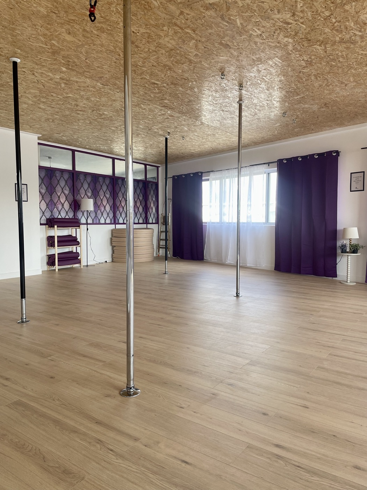
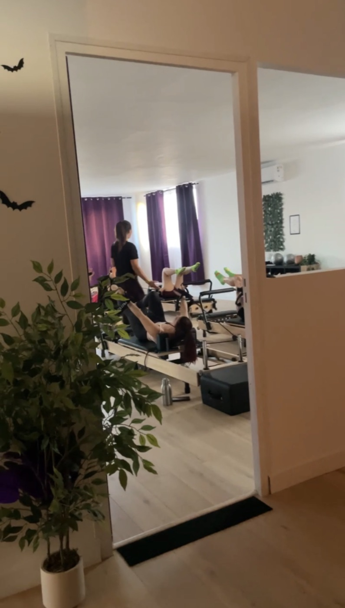
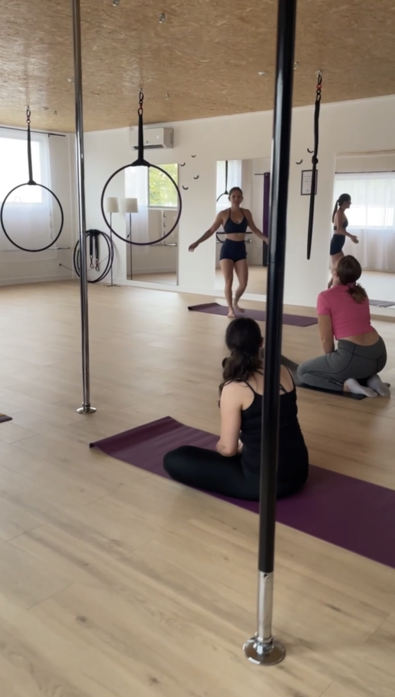
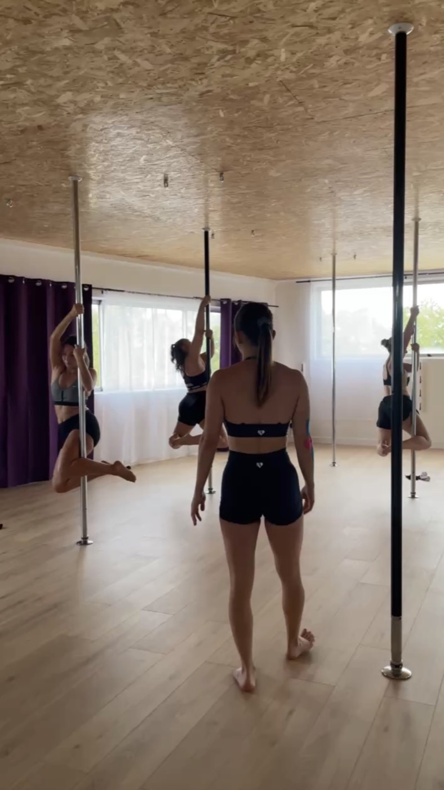
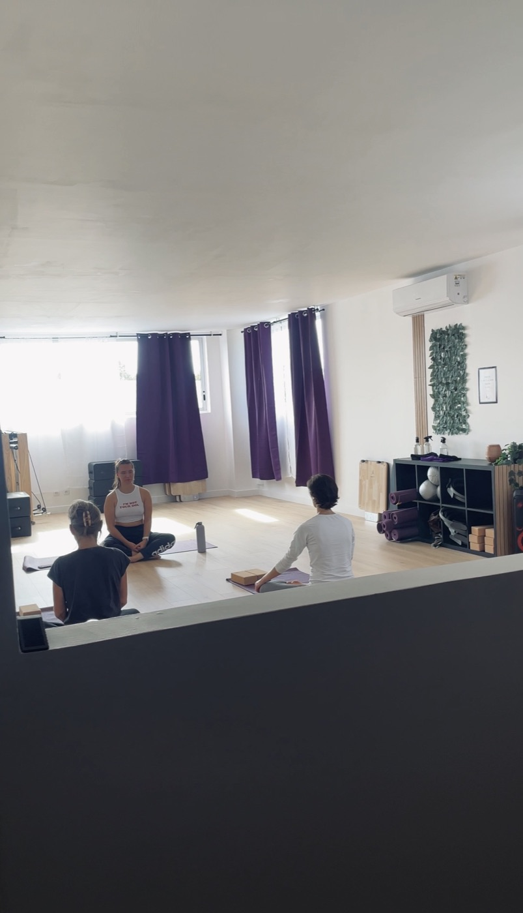

Je crois que j'ai trouvé le secret de Yely in the Air…
(et ce n'est pas ce que tu crois 👀)
Je te raconte l'histoire d'une seule personne.
Appelons-la « elle ».
Peut-être que c'est toi 🤍
🙈Au départ, elle pensait…
(spoiler : non)
Mais surtout, elle avait peur de ne pas être à sa place.

🚪Elle avait deux options
Le choix semblait évident… sauf que.
Quand on est persuadée de ne pas avoir sa place, pousser cette porte, c'est le plus dur.
✨Et puis elle l'a poussée
Voilà ce qu'on m'a laissé après un premier cours :
« Un moment suspendu dans le temps… » ⏳
« Un beau moment, quel que soit votre niveau. Merci ! » 🤍



Petits groupes, professeure toujours à côté de toi.
🎁Ce qu'elle ne savait pas encore
- 🤸Des figures qu'elle ne pensait pas réussir
- 😅Des moments où elle allait galérer
- 🔁Le fameux « attends, je réessaie »
- 💜Et surtout : des gens avec qui se sentir BIEN
« Parfait ! J'ai essayé la pole et c'était vraiment top. La prof nous met à l'aise, les locaux sont neufs et on s'y sent bien. Je recommande vivement ! »
Avis Google💡Le déclic
Elle n'avait pas besoin de devenir plus sportive.
Elle avait juste besoin d'un endroit où elle avait envie de bouger.
Aujourd'hui, elle…
- 😌se sent à l'aise
- 🙋♀️ose essayer
- 🫶prend du temps pour elle
- 📈progresse
- 😊repart avec le sourire
…et se demande pourquoi elle n'est pas venue plus tôt.

Ce n'est pas la Pole.
Ce n'est pas le Reformer.
Ce n'est pas le Yoga.
C'est de se sentir à sa place 🤍
Tu veux ressentir la même chose ?
Pas besoin d'être sportive.
Pas besoin d'être souple.
Pas besoin de connaître.
Tu peux juste venir essayer 😉
Réserver mon cours découverteCours découverte à 18 € · Pole Dance, Cerceau aérien, Yoga, Pilates Reformer
Et si tu prends un abonnement ou une carte dans les 30 jours, ces 18 € te sont déduits.
19 rue Condorcet, 94430 Chennevières-sur-Marne
Si tu hésites encore, viens simplement pousser la porte. Personne ne te demandera ce que tu sais faire.
Une question qui te retient ? Écris-moi à hello@yelyintheair.com. C'est moi qui lis.
À très vite au studio. 🦇